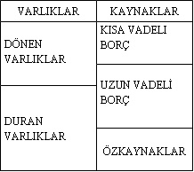
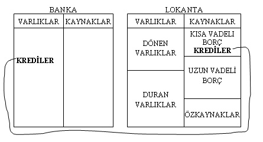
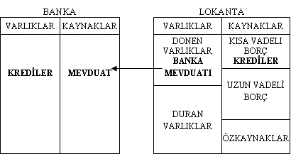
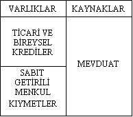
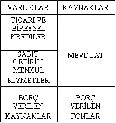
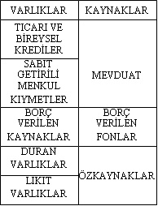

TERSİ-DÜZÜ
İşletme fakültelerimizde okutulan muhasebe derslerinde dönem programı şöyledir:
• Muhasebede temel kavramlar
• Muhasebenin temel ilkeleri
• Mali tablolar
• Bilanço
• Gelir tablosu
• ...
Ve dönemin bitmesine bir hafta kala hoca der ki: “Haa, bir de banka bilançosu vardır ki o ters çalışır”.
Bu cümle neredeyse standarttır: “Bir de banka bilançosu var ki, o zaten karışıktır ve ters mantıkla çalışır”.
E, ne yapacağız o zaman? Biz bu banka bilançosunu hiç öğrenemeyecek miyiz? Neden ters mantık? Bu bankalar ne ters adamlar böyle?
Hayır efendim ters falan çalışmaz, gayet de düz çalışır. Terslik bilançonun kendisinde değil, çeşitli kavramların banka açısından ifade ettiği şeydedir. Örneğin “ticari bir kredi” her firma için ileride ödenecek bir borç iken, krediyi veren banka açısından ileride geri alacağı bir varlıktır. Yani terslik bilançoda değil, kredinin taraflara ifade ettiği anlamdadır.
GENEL OLARAK BİLANÇO
Bu girişten sonra, genelde mali tablo bilgimizi, özelde de ticari işletme bilançosu konusundaki bilgilerimizi gözden geçirelim. Birazdan açıklamaya çalışacaklarımız için okuyucunun temel muhasebe bilgisine sahip olması gerekiyor. Bu noktada eksiği olan arkadaşlarımız için bu kitabın bir nevi tamamlayıcısı durumundaki Finansçı Olmayanlar İçin Finans kitabımızı da gizli bir reklam unsuru olarak önerelim. (Oldukça gizli olduğu kanısındayım.)
İşletmelerin belli bir andaki mali durumunu gösteren finansal tablo, bilançodur. Bilançolarda işletmelerin belli bir anda sahip oldukları varlıklar ve bunların kaynağını gösteren yükümlülükler yer alır. Bu durumda, bir taraftan işletme “mal beyanında” bulunurken, diğer taraftan da bu varlıklarının nereden sağlandığını açıklamaya çalışır.
Buna göre ticari bir işletmenin bilançosu, temel olarak 2 kısımdan oluşur:
• Varlıklar (aktif)
• Kaynaklar (pasif)
Bu başlıklar, likidite ve vade durumlarına göre şu alt başlıklardan oluşurlar:
• Varlıklar
• Dönen varlıklar (Nakit ya da 1 yıldan kısa sürede nakde çevrilmesi beklenen/planlanan varlıklar)
• Duran varlıklar (1 yıldan uzun sürede nakde çevrilmesi beklenen/planlanan ya da asla nakde dönüşmesi planlanmayan varlıklar)
• Kaynaklar
• Kısa vadeli borçlar
• Uzun vadeli borçlar
• Özkaynaklar

BANKA BİLANÇOSU
Ticari bir işletmenin bilançosunu tanımladık. Şimdi de bu ticari işletmenin banka ile ilişkilerini gözden geçirelim. İşletmemizin bir lokanta olduğunu kabul edelim.
Öncelikle işletmemizin, birtakım yeni yatırımlar yapmayı istediğini varsayalım. Yeni yapacağı tefrişat için kendi kaynakları yetmiyor ve bir bankadan kredi alıyor.
Aldığı kredi, kendisi için ileride ödeyeceği bir borç olacağına göre, bilançosunun pasif, yani kaynaklar kısmında, vadesine göre kısa ya da uzun vadeli finansal borç olarak tasnif edilecektir. Öte yandan, bu krediyi veren banka açısından, bu para, bir süre sonra faiziyle birlikte geri alacağı bir varlık, bir nevi yatırımdır. O hâlde bu kredi, banka açısından bir varlık olacak ve aktifinde görünecektir.

Lokantamız, kazanmış olduğu ve bir süre ihtiyaç duymayacağını düşündüğü bir miktar parasını değerlendirmek için bankanın yolunu tutuyor. Bu kez mevduat, firmanın aktif tarafında, dönen varlıklar altındaki banka hesabında. Oysa bu birikim banka açısından bir borçtur ve vadesinde müşteriye geri ödenecektir. O hâlde mevduat, banka açısından bir kaynak, yani bir yükümlülüktür.

Görüldüğü üzere, bir işletme için kredi ve mevduatın ifade ettiği şey, yaptığı iş itibarıyla banka için tümüyle farklı anlama gelmektedir. Bu durum da banka bilançosuna yansımaktadır. Bu noktada bir bankanın bilançosunun en temel yapısı ortaya çıkmıştır: “Bankalar temel olarak mevduat toplar ve topladığı mevduatları kredi olarak başkalarına satar”.
Bu temel tespitin yanı sıra bankalar, topladıkları kaynakların bir kısmını da devlete belli bir getiri karşılığında satarlar. Bu, bankaların Sabit Getirili Menkul Kıymet (SGMK) satın almaları anlamına gelecektir. O hâlde, banka bilançosu şu hâle gelir:

Elbette bankalar başka işler de yapar. Örneğin yurt içi ve dışı finans kurumlarından borç yoluyla kaynak sağlayabilir ya da bunlara borç verebilir.

Banka bilançosunun tamamlanmasına çok az kaldı. Bankaların bir miktar duran varlıkları (iştirakler dâhil), bazı likit değerleri ve elbette özkaynakları olduğu düşünülürse, bir bankanın “en temel hâliyle” bilançosu da oluşmuş oluyor:

BANKA BİLANÇOSUNUN KARŞI KARŞIYA KALDIĞI RİSKLER
Gelelim sadede. Piyasaları tahmin etmeyi amaçlayan bir kitapta banka bilançosu neden uzun uzun anlatılır? Neden bankaların bilançolarının hangi kalemlerden oluştuğu ve bu kalemlerin bilançosunun neresinde yer aldığı detaylandırılır?
Yanıtımız şu: Bankalar, finansal piyasaların en büyük oyuncusudurlar. Buna göre bankalar, piyasadaki hemen her oyuncuya göre daha etkin ve güçlüdür. Hatta, bizim ülkemiz dâhil pek çok piyasada ekonominin doğal seyrinde gidişini etkileyebilecek, gelişmeleri erkene almak ya da geciktirmeye “cüret edebilecek” güçtedir. Elbette bir noktaya kadar.
Bankalar, eski bir bankacının dediği gibi, “Piyasalardaki gelişmelere ve beklentilere göre pozisyon alırlar”. O hâlde bankaların bilançolarına bakarak gelecekten ne beklediklerini öğrenebiliriz. Dahası, beklentileri değişse bile pozisyonlarını kolaylıkla değiştiremeyeceklerine göre, durumu kendi lehlerine çevirmek adına nasıl davranacaklarını tahmin etmek mümkün olabilecektir.
Bankaların nasıl davranacaklarını, piyasayı nasıl gördüklerini ve gerektiğinde nasıl yönlendireceklerini tartışmadan önce, banka bilançosunun karşı karşıya kaldığı riskleri kısaca gözden geçirelim:
A. Piyasa Riski: Finansal piyasalarda oluşabilecek dışsal risktir. Genel olarak öngörülebilse bile engellenmesi pek mümkün değildir. Yalnızca hazır olunabilir.
B. Likidite Riski: Paralarını bankaya mevduat olarak yatıran vatandaşlar ile bankalara borç veren finansal kuruluşların paralarını vadelerinde ya da vadelerinden önce çekmesi riskidir. Banka o paraları ya kredi olarak ya da SGMK olarak sattığından, parasını isteyen mudi ya da borç verenlerin öngörülenden fazla olması durumunda yükümlülüklerini yerine getiremeyebilecektir. Risk, en çok bilançonun aktif ve pasifi arasında vade uyumsuzluğu olduğunda doğar.
C. Faiz Riski: Daha önce de bahsedildiği üzere SGMK’ların piyasa fiyatı, mevcut faiz oranları ile ters orantılıdır. Dolayısıyla, elinde SGMK olan bankalar faizlerin yükselmesi hâlinde bu pozisyonlarından dolayı zarar edecektir. Benzer durum krediler için de geçerlidir. Eğer bir banka düşük bir faizden kredi kullandırmış ise ve ardından faizler yükselmeye başlamış ise bu pek iyi olmayacaktır. Çünkü, örneğin, % 20’den kredi kullandıran banka, birkaç gün sonra daha yüksek faizlerden (örneğin % 25) mevduat toplamak zorunda kalırsa, göreceli olarak zararda olacaktır. Risk, en çok, bilançonun aktif ve pasifi arasında vade uyumsuzluğu olması hâlinde doğar.
Ç. Kur Riski: Bankaların varlıkları ile yükümlülüklerinin aynı para biriminden olmaması durumunda doğan risktir. Buna göre, örneğin, banka USD cinsinden topladığı mevduatı eğer YTL’ye çevirir ve bono satın alır ise, kurun hızlı artması durumunda zarar edecektir.
D. Kredi Riski: Verilen kredilerin öngörülen şekilde geri dönmeme riskidir.
E. Operasyonel Risk: Banka içi süreçlerden doğan risktir. Çok iyi yapılandırılmış sistemlerde genellikle hayati sonuçlara yol açmaz.
F. Sermaye Yeterliliği Riski: Bankanın bir ya da daha fazla risk ile karşı karşıya kalarak BDDK ve benzeri kuruluşların kendisinden istediği minimum finansal gücü sağlayamaması ve faaliyetlerine son verilmesi riski.
Evet bankacılığın en teknik konularından birisini elden geldiğince özetlemeye çalıştık. Daha detayı için “bankalarda aktif-pasif yönetimi” konulu teknik kaynakları öneriyoruz. Ancak bu kadar bilgiyle bile, bankaların karşı karşıya kaldıkları riskler nedeniyle nasıl davranabilecekleri konusunda fikir yürütebilecek durumdayız.
BİLANÇOLARA BAKARAK ÖNGÖRÜ
Geldiğimiz noktada banka bilançosunun nasıl bir şey olduğunu ve ne gibi risklerle karşı karşıya kalabileceğini konuştuk. Bu aşamadan sonra belli bilanço durumlarında bankaların nasıl davranacaklarını tahmin etmeye çalışalım.
Bu bölümün, kitabın en karışık bölümlerinden birisi olduğunu ve dikkatinizi toplayarak birkaç kez okumanızın anlaşılırlığını artıracağını belirten bir uyarı da yapalım!
Tespit 1
Öncelikle şunu kabul etmemiz gerekiyor ki, bankalar bilançolarında vade uyumunu pek az defa sağlayabilirler. Yani bilançolarının aktifindeki kredilerin ve SGMK’ların vadeleri ile pasifindeki mevduat ve borç alınan kaynakların vadesi bire bir örtüşmez. Genellikle kısa vadeli mevduat toplayıp bunu çok uzun vadeli kredilere ya da SGMK’lara plase ederler.
Bu durum da bankaların bilançolarında “vade uyumsuzluğu” yaratır. Bu uyumsuzluk eğer anlattığımız biçimde, aktif vadesinin daha uzun olması şeklindeyse, bankanın beklentisi (ya da umudu) faizlerin düşmesi yönünde olacaktır. Zira, bankalar faizler düştükçe, kısa vadelerde topladıkları mevduatları, vadesi geldiğinde daha da düşük faizlerle sürekli çevirmekte ve maliyetlerini her gün daha da düşürmektedirler. Öte yandan, uzun vadede iyi bir faiz ile sattıkları paralarından, düşen faiz ortamında yüksek getiri elde etmenin de keyfini çıkarırlar.
Bunun tam tersi durumda, yani faizlerin genel olarak artması hâlinde ise, kısa vadede bağladıkları mevduatları vadesinde daha yüksek faiz ile bağlamak zorunda kalacaklardır. Bu maliyetlerinin artması anlamına gelecektir. Aktif tarafında da sattıkları paraları daha yüksek bir faize satamamış olarak “fırsat maliyeti” ile karşı karşıya kalmış olacaklardır.
O hâlde bu durumu şöyle özetleyebiliriz:
VADEAKTİF > VADEPASİF ==> Bankalar faizlerin düşmesini beklemekte ya da ümit etmektedir.
Tespit 2
Çok sık rastlanmasa da, ikinci durum Tespit 1’in tam tersidir. Buna göre, bankalar göreceli olarak uzun vadelerde bağladıkları mevduatları çok kısa vadelerde satmaktadırlar. Yani aktif vadeleri, pasif vadelerinden daha kısadır.
Böylesi bir durumda eğer faizler düşme trendine girer ise, sattıkları paraları, vadesi geldiğinde daha da düşük faizlerden tekrar satmak zorunda kalacaklardır. Bu durumda da daha az faiz geliri elde edeceklerdir. Bankaların topladıkları mevduatların vadelerinin verdikleri kredilerden daha uzun olduğunu varsayalım. Bu durumda faizlerin düşmesi zarar etmelerine yol açacaktır. Zira mevduata söz vermiş oldukları oran üzerinden faiz vermeye devam ederken yeni kredileri daha düşük oranlardan satmaları gerekecektir. Tersi olduğunda, yani faizlerin artması hâlinde ise, verecekleri her yeni krediyi daha yüksek faizden satarken mevduat maliyetleri vadesi boyunca sabit kalmış olacaktır. Bu durumda da sabit maliyete karşı kredi getirisi artacağından kâr edeceklerdir.
O hâlde, bu durumu şöyle özetleyebiliriz:
VADEAKTİF < VADEPASİF ==> Bankalar faizlerin yükselmesini beklemekte ya da ümit etmektedir.
Tespit 3
Yukarıdaki iki uç durumun arasında da bazı durumlar mevcuttur elbette. Tespit 1’in girişinde, de fakto bir veriden bahsettik: Bankaların genellikle aktif vadesinin pasif vadesinden daha uzun olduğunu biliyoruz.
O hâlde, doğrudan ikinci durumun gerçekleşmesi çok istisnai bir dönemi işaret edecektir. Bu hâlde de bize “marjinal” değişimler rehberlik etmeli.
Şöyle bir durum düşünelim: Bankaların bilançolarının aktifi, yani verdikleri kredilerin ve satın aldıkları SGMK’ların ortalama vadeleri, genelde olduğu gibi, topladıkları mevduatların yani pasiflerinin ortalama vadesinden daha uzun olsun. Bu noktada, bankaların bilançolarının zaman içindeki değişimi önem kazanacaktır. Örneğin, genel olarak, VadeAktif > VadePasif olabilir. Ancak zaman içinde aktif vadesinin pasif vadesinden hâlâ uzun olmakla birlikte kısalıyor olması ya da tam tersi bir durum, bankaların planları ve/veya beklentileri hakkında bilgi verebilecektir.
Buna göre faizlerin düşeceğini öngören bankalar, bilançonun genel durumunu tümüyle değiştiremeseler dahi, düşüşte avantajlı hâle geçebilmek için ellerinden geldiği ölçüde verdikleri kredilerin ve satın aldıkları SGMK’ların vadesini uzatmaya çalışacaklardır.
Tam tersi bekleyişte ise, faiz yükselişinden en az darbeyi alabilmek için ellerinden geldiği ölçüde verdikleri kredilerin ve satın aldıkları SGMK’ların vadesini kısaltmaya çalışacaklardır.
O hâlde, bu durumu şöyle özetleyebiliriz:
Bankalar faizlerin yükselmesini bekliyorsa ==> VADEAKTİF’i kısaltmaya çalışırlar.
Bankalar faizlerin düşmesini bekliyorsa==> VADEAKTİF’i uzatmaya çalışırlar.
Tespit 4
Son olarak, bankaların aktif yapısını incelemekte yarar görüyoruz. Bankaların aktifinde kredi olmasıyla SGMK olması arasında da elbette fark var. Faiz değişimlerine her ikisinin de vereceği tepki farklı olacaktır.
Yatırım araçlarını incelediğimiz önceki bölümlerde SGMK’ların özelliklerinden ve ikinci el fiyatları ile piyasa faiz oranları arasında “ters yönlü” bir ilişki olduğundan bahsetmiştik. Buna göre, SGMK’ların değerleri faiz oranlarındaki değişime karşı çok hassastır. Öte yandan, faizlerdeki değişim, verilen kredilerin değerini doğrudan bu denli değiştirmemekte, ancak fırsat maliyeti anlamında etkili olmaktadır.
Ayrıca faiz değişiminden uzun vadeli plasmanların daha çok etkileneceği düşünüldüğünde, faiz artışından korkulduğunda vade kısaltılmalı, faiz düşüşü beklendiğinde ise vade uzatılmalıdır.
Buna göre faiz oranları düşerse uzun vadeli aktiflere sahip olmak avantajlı bir durum olacak, ancak en çok SGMK’ların değeri bundan olumlu etkilenecektir. O hâlde, faizlerin düşeceği bir ortamda aktif: Uzun vadeli ve SGMK ağırlıklı olmalıdır.
Tersi durumda, yani faiz oranlarının artacağı bir ortamda, kısa vadeli aktiflere sahip olmak avantajlı olacak ve SGMK’lar bundan en olumsuz etkilenecek grup olacaktır. O hâlde, faizlerin yükseleceği bir ortamda, aktif olabildiğince kısaltılmalı ve SGMK portföyü küçültülmeli: Kısa vadeli SGMK ve kısa vadeli sağlam kredi ağırlıklı olmalıdır.
O hâlde, bu durumu şöyle özetleyebiliriz:
Bankalar faizlerin düşmesini bekliyorsa ==> Aktif uzun vadeli ve SGMK ağırlıklı tutulmalı.
Bankalar faizlerin yükselmesini bekliyorsa==>Aktif kısa vadeli SGMK ve kısa vadeli sağlam kredi ağırlıklı tutulmalı.
O hâlde...
Piyasanın doğal “ağabeyleri” bankaları inceledik. Banka bilançosunun da işleyiş olarak aslında ticari işletme bilançosuna benzediğini gördük. Bankalar, temel olarak mevduat toplayıp kredi veren ya da SGMK satın alan finansal aracılardır.
Banka bilançolarının karşı karşıya kaldıkları riskleri sıraladık. Bunlar:
• Piyasa Riski
• Faiz Riski
• Likidite Riski
• Kur Riski
• Kredi Riski
• Operasyon Riski
• Sermaye Yeterliliği Riski
idi. Ardından bankaların bilançolarının durumundan ne beklediklerini ya da tersten gidersek bankaların değişen ortamlara göre bilançolarını nasıl oluşturduklarını anlamaya çalıştık. Bu çalışmadan sonra da bazı önemli tespitlerde bulunduk:
VADEAKTİF > VADEPASİF ==> Bankalar faizlerin düşmesini beklemekte ya da ümit etmektedir.
VADEAKTİF < VADEPASİF ==> Bankalar faizlerin yükselmesini beklemekte ya da ümit etmektedir.
Bankalar faizlerin yükselmesini bekliyorsa ==> VADEAKTİF’i kısaltmaya çalışırlar.
Bankalar faizlerin düşmesini bekliyorsa ==> VADEAKTİF’i uzatmaya çalışırlar.
Bankalar faizlerin yükselmesini bekliyorsa ==> Aktif kısa vadeli SGMK ve kısa vadeli sağlam kredi ağırlıklı tutulmalı.
Bankalar faizlerin düşmesini bekliyorsa ==> Aktif uzun vadeli ve SGMK ağırlıklı tutulmalı.